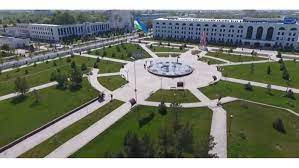

Sirdaryo |
|||||
| Sirdaryo |
Sirdaryo
|
||||
| Toshkent | |||||
| Buxoro | |||||
| Samarqand | |||||
| Navoiy | |||||
| Farg'ona | |||||
| Jizzax | |||||
| Xorazm | |||||
| Namangan | |||||
| Qashqardaryo | |||||
| O'zbekiston | |||||
| Surxandaryo | |||||
| Andijon | |||||
Sirdaryo viloyati Vikipediya, ochiq ensiklopediya Navigatsiya qismiga oʻtishQidirish qismiga oʻtish Bu atamaning boshqa maʼnolari ham mavjud. Qarang: Sirdaryo viloyati (maʼnolari). Sirdaryo viloyati viloyat Maʼmuriy markazi Guliston shahri Yirik shaharlari Yangiyer, Sirdaryo, Shirin Asos solingan sanasi 1939-yil Viloyat hokimi Gʻofurjon Mirzayev Rasmiy tili oʻzbekchao'zbek Aholi (2022) 900 mingga yaqin (14-oʻrin) Zichligi 210 kishi./km² Millatlar tarkibi oʻzbeklar, tojiklar, qozoqlar, ruslar Dinlar tarkibi musulmonlar Maydoni 4.28 ming km.kv km² (1 %, 12-oʻrin) Sirdaryo viloyati xaritada Sirdaryo viloyati, Xarita Soat mintaqasi UTC+5 Kod ISO 3166-2 UZ-SI Avtomobil raqami kodi 12 (eskisi 1998-2008) 20 (yangisi 2008-yildan) Koordinatalari: 40°25′0″N 68°40′0″E G O Sirdaryo viloyati - Oʻzbekiston Respublikasi tarkibidagi viloyat. 1963-yil 16 fevralda tashkil etilgan. Shimolidan Qozogʻiston Respublikasi, sharqdan Toshkent viloyati, janubidan Tojikiston Respublikasi va gʻarbdan Jizzax viloyati bilan chegaradosh. Maydoni 4.28 ming km. Aholisi 900 migga yaqin kishi (2022). Tarkibida 8tuman (Boyovut, Guliston, Mirzaobod, Oqoltin, Sayxunobod, Sirdaryo, Xovos, Sardoba) (tumanlar haqida alohida maqolalarga qarang, maye. Boyovut tumani), 5 shahar (Guliston, Baxt, Sirdaryo, Shirin, Yangiyer), 6 shaharcha (Boyovut, Dehqonobod, Doʻstlik, Paxtaobod, Sayxun, Xovos) va 75 qishloq fuqarolari yigʻini bor (2004). Markazi — Guliston shahri. Mundarija 1 Tabiati 2 Hududiy boʻlinishi 3 Tarixi 4 Aholisi 5 Xoʻjaligi 6 Sanoati 7 Qishloq xoʻjaligi 8 Transporti 9 Madaniy-maorif, sogʻliqni saqlash va sport 9.1 Sogʻliqni saqlash 9.2 Sport 10 Adabiyoti 11 Matbuoti, radio va televideniyesi 12 Mashhur sirdaryoliklar 13 Manbalar Tabiati Relyefi, asosan, toʻlqinsimon tekislik boʻlib, janubidan shim.gʻarbga pasayib boradi. Mirzachoʻl dashtining bir qismi viloyat hududiga kiradi. Bal. shimubida 230 m, markaziy qismida 400–450 m, jan. va jan.gʻarbda 600–650 m. Sharqida keng Sirdaryo vodiysi joylashgan. Mezozoy va kaynozoy davrida, asosan, choʻkindi jinslarning qalin qatlami bilan qoplangan. Shoʻroʻzak, Mirzarabot, Sardoba kabi botiqlar mavjud. Tekislik qismi daryolar oqizib keltirgan yotqiziklardan hosil boʻlgan, baʼzi joylarini koʻl, botqoq va shoʻrxok yerlar egallagan. Sirdaryo viloyatida yangi kanallar, zovurlar qazilib, choʻl oʻzlashtirildi va ekin maydonlarga aylantirildi. Tekislik qismida irrigatsiya inshootlari qurilib, paxtazor, bogʻ va tokzorlar barpo qilindi. Adirlar lalmikor yerlar va yaylovlardan iborat. Ob-havosi keskin oʻzgaruvchan va quruq. Yillik oʻrtacha temperaturasi 14°. Yanvarning oʻrtacha temperaturasi shimolida —6°, janubida —2°. Qishda havo tez soviydi va tra —30° gacha (Gulistonda —35°) pasayadi. Baʼzan, qish oʻrtalarida havo birdaniga isib, keyin sovib ketadi. Kech koʻklamda va erta kuzda ham kora sovuq tushib oʻsimlikning oʻsish davrini qisqartiradi. Yozi quruq va issiq. Iyulning oʻrtacha temperaturasi 27—29°. Yozda tra 32—45° gacha koʻtariladi. Koʻpincha issiq shamol (garmsel) tuproqni quritadi va oʻsimliklar rivojlanishiga yomon taʼsir qiladi. Vegetatsiya davri 218 kun. Yillik yogin 180–220 mm, asosan, qishda yogʻadi. Yozda kuchli bugʻlanish sababli yer osti suvlari yuza maydonlarning (Sharof Rashidov, Oqoltin, Guliston tumanlari) tuprogʻini shoʻr bosadi. Noyabrdan martgacha teztez esib turadigan "Bekobod shamoli" tezligi 20–25 m/sek. (Boyovut tumanida 40 m/sek.)ga yetadi. Bahorda esadigan bu xildagi shamol unib chikayotgan gʻoʻzalarni baʼzan nobud qiladi. Keyingi yillarda ixota daraxtzorlari barpo qilindi. Tuproqlari, asosan, och tusli kuchsiz joylashgan boʻz tuproq boʻlib, kam va oʻrtacha shoʻrlangan, mexanik tartibiga koʻra, qumoq va soz tuproqlardir. Tekisliklarda shoʻrxok va shoʻrxoksimon tuproq uchraydi. Yer osti suvining chuq. 5–6 m. Shoʻroʻzak massivida, hali oʻzlashtirilmagan pastqam joylarda shoʻrxoklar keng tarqalgan. Sugʻoriladigan yerlarning 32% shoʻrlangan, 25% kuchsiz shoʻrlangan, 16% shoʻrxoklardan iborat. Oʻsimliklardan lolaqizgʻaldoq, boychechak, chuchmoma, qoqi yalpiz, ismaloq, yantoq, shoʻra, shuvoq, qoʻngʻirbosh, qoʻziquloq, tuyatovon, quyonsuyak. juzgʻun, qovul, oqquray, qiltiq, karrak, rang, iloq, betaga, qiyoq, qamish, yulgʻun, oqbosh, qushqoʻnmas, naʼmatak, mingboshi, chitir, gʻumay, pechak, saksovul, har xil butalar, jiyda, doʻlana, tol, terak, qayragʻoch, oq akatsiya, zarang, shumtol va boshqa oʻsadi. Yovvoyi hayvonlardan: jayra, tulki, boʻri, chiyaboʻri, qobon, jayran, nutriya, ondatra, koʻrsichqon, suvkalamush, tipratikan, yumronqoziq, kaltakesak, ilon, toshbaqa, falanga, chayon, qoraqurt; qushlardan xoʻjasavdogar, moyqut, bulduruq va boshqa bor. Hududiy boʻlinishi Sirdaryo districts.png Tuman nomi Tuman markazi 1 Oqoltin tumani Oqoltin 2 Boyovut tumani Boyovut (shaharcha) 3 Guliston tumani Dehqonobod 4 Xovos tumani Xovos 5 Mirzaobod tumani Navroʻz (shaharcha) 6 Sardoba tumani Paxtaobod (Sirdaryo viloyati) 7 Sayxunobod tumani Sayxun 8 Sirdaryo tumani Sirdaryo (shahar)
Tarixi Qadimgi Sirdaryo tarixi haqida maʼlumot beruvchi muhim yozma manba qad. yunon tarixchisi Arrianning "Iskandarning harbiy yurishlari" asaridir. Bu asarda Sirdaryo "Tanais", "Yaksart" nomi bilan yuritiladi. Mil. av. 3—2-asrlarda Oʻrta Osiyoning shimoliy rayonnlarida 5 ta mayda davlatlardan iborat Qangʻyuy davlati ittifoqi yuzaga keladi. Uning tarkibiga hozirgi Sirdaryo viloyati hududlari ham kirgan. Ushbu davrda koʻchmanchi aholining viloyat hududiga kelib oʻrnashishi yer tanqisligini yuzaga keltiradi. Natijada hozirgi Xovos tumanining gʻarbiy qismlari ham aholi tomonidan oʻzlashtiriladi. Shoʻrbuloqsoyning quyi qismida Eski Xovos yodgorligi, Shirinsoyning quyi qismida Munchoqtepa yodgorligi qad koʻtaradi. Sirdaryo viloyati hududi ilk bor alohida oʻlka— Ustrushona sifatida Beyshi, Suyshi va Tanshu kabi Xitoy yilnomalarida tilga olinadi. Undan oldingi manbalarda Sharqiy Sao (suvi yoʻq) deb yuritiladi. Uning bunday nomlanishi hududda qoʻshni Choch va Sugʻddan farqli ravishda daryolarning koʻp boʻlmaganligi bilan izoxlanadi. Nisbatan oʻlkaning toʻlaroq nomlanishi Tanshu yilnomalarida ("Shuaydushana", "Suydushana" nomlari bilan) berilgan. Tan imperatorlari saroyida oʻlka nomi, shuningdek, Layviy (magʻrurligini sezgan holda boʻysunmoq) deb ham yuritilgan. Viloyat qad. aholisining tili sugʻd tiliga oʻxshash tilda soʻzlashuvchi Sirdaryo va Amudaryo oraligʻida yashagan aholi tiliga yaqin boʻlgan. Xan davri yozma manbalarida Dovon (Fargʻona)dan to Ansi (Baqtriya)gacha boʻlgan hudud aholisi turli shevalarda gaplashsalarda, birbiriga yaqin tidda gaplashganlar va oʻzaro birbirini tushunganlar deyiladi. Mil. 6-asrda Turk xoqonligi davrida mahalliy aholining turk qabilalari bilan munosabatlari rivojlanadi. Qudaandachilik munosabatlari oʻrnatiladi. Ustrushona afshini Xasan ibn Haydar turk lashkarboshisining qiziga uylangan. 8-asrga oid Xitoy yozma manbasi Syuandzanda yozilishicha, oʻlka "Sutulisen" deb nomlanadi. Shuningdek, unda shim.gʻarbda katta choʻl (Mirzachoʻl) joylashganligi, oʻlka hukmdori Bosi togʻi (Turkiston togʻ tizmasi)ning shim. yon bagʻrida yashaganligi haqida maʼlumotlar bor. Oʻlkada zarb qilingan 6—8-asrlarga oid tangalar Ustrushonaning ilk hukmdorlari Chirdmish, Satagari, Raxang haqida maʼlumot beradi. Hokimiyat shu davrda otadan bolaga oʻtgan. 8-asr boshida Ustrushonaga arablar bostirib kirgan. Ustrushona arab va Tan sulolasi oʻrtasidagi kurash maydoniga aylangan. 749 yilda xitoyliklar yurish qilgan boʻlsa, 751 yilda Ustrushonani arablar bosib olgan. Fakatgina 9-asr boshlaridan Haydar ibn Qavus arab xalifasi xizmatiga kiradi. 893 yilda afshinlar sulolasi agʻdarib tashlanib Ustrushona Somoniylar davlati tarkibiga kiritshshi. Oʻrta asrlardagi Ustrushona haqida birmuncha toʻliq maʼlumotlar arab yozma manbalarida mavjud. Ularda aytilishicha, oʻlka hududi Xoʻjanddan Samarqandgacha, Sirdaryo daryosi va Mirzachoʻldan to Hisor tizma togʻlarigacha boʻlgan. Istaxriy (10-asr) maʼlumotiga koʻra, Ustrushonaning koʻpgina qismini togʻlar egallagan boʻlib, unda "kemalar suzishi mumkin boʻlgan daryo ham, koʻl ham yoʻq". Havkalga binoan, Movarounnaxrning boshqa viloyatlari qatori Ustrushona ham qishloq xoʻjaligi mahsulotlari bilan ajralib turardi. Bu mahsulotlar viloyat tashqarisiga, jumladan, Xoʻjandga chiqarilgan. Ayrim shaharlarda bozorlar boʻlgan. Ustrushonaliklarning fahri Mink va Marsmandada ishlab chiqarilgan temir qurollar boʻlib, ular Xurosonda ishlatilgan va Iroqqacha shu qurolyarogʻ bilan qurollanganlar. Ustrushona poytaxti Bunjikat sh. boʻlgan. Oʻrta Osiyodagi boshqa davlatlar qatori Ustrushona ham keyingi hayotida qoraxoniylar, moʻgʻullar, temuriylar, shayboniylar va boshqa davlatlari tarkibidagi tarixiy davrlarni boshidan kechirgan. Qadimgi viloyat axoliyey, asosan, soy va chashmalar boʻylarida vohavoha boʻlib hayot kechirishgan. Viloyat hududida Xoʻjamushkentsoy, Shoʻrbuloqsoy, Mugʻolsoy, Tagobsoy, Sarmichsoy singari suv manbalari boʻlgan. Suv balansining buzilishi manzilgohlarning yoʻq boʻlib ketishiga yoki boshqa joyga koʻchib oʻtilishiga olib kelgan. Sirdaryo viloyatida qadimgi kanallarning izlari, sardobalar mavjud. 70 km uzunlikdagi Oʻrinboyoʻgʻiz, Iskandarariq, Buxoroariq juda qad. kanallardir. 15-asrda Shohrux va Ulugʻbek Sirdaryodan Mirzachoʻlga kanal orqali suv chiqartirgan. Keyinchalik Mirzachoʻlning janubi-sharqida Boʻzariq, Sirdaryoning oʻng tomonida Dalvarzinariq barpo etilgan. Qiyot koʻli yonida Sirdaryodan suv oladigan mayda ariqlar boʻlgan. 1872-yilda Bekobod yonida Kaufman kanali (13 km), 1878—82 yillarda Toʻngʻizariq (6 km) qazildi. 1883—85 yillarda Iskandarariq va Buxoroariq qayta kavlandi. 1891—95 yillarda Farhod togʻi yonida maxsus toʻgʻon (Shohtoʻgʻon) qurildi. 1896-yilda hozirgi Doʻstlik kanali qazilib Mirzachoʻlning ichkarisiga suv yuborildi. 1897-yilda Mirzachoʻlda birinchi marta 6 ga yerga paxta ekildi. 1899-yilda 8 ming ga, 1907-yilda 9,09 ming ga, 1910-yilda 12,2 ming ga, 1915-yilda 34,5 ming ga yer sugʻorilib, 19 ming ga yerga paxta ekildi. 1926-yilda 180 km ariq va kanallar qazildi, sugʻoriladigan maydonlar 53 ming gektarga yetdi, 1927-yilda 60 ming ga (shundan paxta 27 ming ga), 1929-yilda 68 ming ga, 1934-yilda 134 ming ga, 1938-yilda 154 ming ga (shundan paxta 40 ming ga) yer sugʻorildi. 1942-yilda 180 ming ga yer (shundan 70 ming ga yer paxta) sugʻorildi. 1943—48 yillarda Farhod GES, bosh toʻgʻon Doʻstlik kanaliga tutashtirildi. Boyovut kanali va Farxrd suv ombori qurildi. Natijada Mirzachoʻlning jan. qismi va Dalvarzin choʻlini sugʻorish masalasi hal qilindi. 1956—59 yillarda Qayroqqum suv ombori va GES (quvvati 126 ming kVt) qurildi. 1956-yillarda sugʻoriladigan yerlar maydoni 280 ming gektar yerga yetdi. 1960-yilda Janubi Mirzachoʻl kanali (uz. 128 km) qazildi. 1958-yilda shoʻr suvlarni oqizish uchun 90 km uzunlikdagi Markaziy Mirzachoʻl kollektori qurilib, Boyovut va Yettisoy kollektorlariga qoʻshildi. Viloyat qududidan Sirdaryo oqib oʻtadi. Aholisi Sirdaryo viloyatida, asosan, oʻzbeklar (60%), shuningdek, qozoq, tojik, rus va boshqa 70 dan ortiq millat vakillari yashaydi. 1 km² ga 126 kishi toʻgʻri keladi (2003). Qishloq aholisi 455,9 ming kishi, shahar aholisi 211,9 ming kishi. Xoʻjaligi Sirdaryo viloyati respublikaning yirik paxtachilik bazalaridan biri. Viloyat xoʻjaliklari, asosan, paxta yetishtirishga ixtisoslashgan. Sanoati paxtani va boshqa qishloq xoʻjaligi mahsulotlarini qayta ishlashga qaratilgan. Sanoati 20-asr boshlarida viloyatda bir necha mayda korxona bor edi. 1970-yillarda 8 paxta tozalash zavodi, 29 paxta qabul qilish punkti boʻlgan. Paxta zavodlaridan chiqqan paxta tolasi Bolgariya, Polsha, Kuba, Chexoslovakiya, Turkiya, Afrika mamlakatlariga joʻnatilgan. Sirdaryo viloyatidagi 10774 ta korxonadan 10129 tasi kichik va oʻrta biznes korxonasi, shundan 8557 tasi mikrokorxona va 1282 tasi kichik va 290 tasi oʻrta korxonalardir. Viloyatda xorijiy investitsiya ishtirokida 39 ta korxona faoliyat koʻrsatadi. Ulardan 35 tasi qoʻshma korxonadir. Qoʻshma korxonalardan: Oʻzbekistan — Rossiya hamkorligidagi "Turkiston S" (konditer mahsulotlar ishlab chiqaradi), Oʻzbekiston — Chexiya "Lechiva" farmsanoat qoʻshma korxonasi (tibbiy spirt, doridarmon tayyorlaydi), chet el parrandachilik firmasi, Oʻzbekiston — Avstriya "Sirdaryo", "Lolamodel" (trikotaj buyumlar ishlab chiqaradi), "Sarbonteks" (tibbiy bint, doka, jarroxlik salfetkalari), Oʻzbekiston — Eron "Sayxun PAYA" (tomat pastasi ishlab chikariladi), Oʻzbekiston — Xitoy "Paxtakor LTD" (issiqxona),Oʻzbek — Arab "Ok,oltin PMB" (paxta tolasi ishlab chiqaradi) va boshqa korxonalar, ayniqsa, samarali faoliyat koʻrsatmoqda. 9 paxta tozalash zavodi, Sirdaryo issiklik elektr stansiyasi, Farhod GES, "Momiq", "Zilola", "Shuxrat", "Gulistonnon", "Xovosdon", "Oq oltindon" aksiyadorlik jamiyatlari, "Sayxunsut" xususiy korxonasi, "Bunyod" korxonasi (temirbeton buyumlar ishlab chiqaradi) va boshqa ishlab turibdi. Qishloq xoʻjaligi Paxtachilik, gʻallachilik, pillachilik, mevachilik, sabzavotpolizchilik va chorvachilikka ixtisoslashgan. Sirdaryo viloyatida 30 shirkat va 6170 fermer xoʻjaligi faoliyat koʻrsatadi (2004). Viloyatning jami ekin maydonlari 245,0 ming ga, shundan 115,3 ming ga yerga paxta, 86,3 ming ga yerga gʻalla, 6,0 ming ga yerga sholi, 1,9 ming ga yerga sabzavot, 2 ming ga yerga poliz, 450 ga yerga kartoshka, 19,5 ga yerga yem-xashak ekinlari ekiladi. 1233 ga bogʻ va tokzor bilan band. Shuningdek, sugʻoriladigan yerlarga beda, noʻxat, mosh, kunjut, tariq, loviya, kungabokar va boshqa ekiladi. Guliston va Xovos tumanlari sabzavot va poliz ekinlari ekiladigan asosiy joylardir. Viloyatda yetishtiriladigan qovun, tarvuz, piyoz Ural, Sibir va Uzok, Sharqdagi shaharlarga ham joʻnatiladi. Bogʻdorchilik va tokchilik rivojlangan. Sirdaryo viloyatidagi jami jamoa va shaxsiy xoʻjaliklarida 181,1 ming krramol (shundan 75,9 ming sigir), 120,5 ming qoʻy va echki, 376,3 ming parranda, 6,1 ming ot boqiladi (2004). Viloyatda 2 ta baliqchilik xoʻjaligi mavjud. Transporti Viloyat hududidagi temir yo'l uzunligi 172 km, qattiq qoplamali avtomobil yoʻllari uzun. 1,6 ming km. Sirdaryo viloyati hududidan Toshkent—Kitob, Toshkent — Nukus, Toshkent — Buxoro, Toshkent — Termiz, Toshkent — Samarqand, Toshkent — Andijon, Toshkent — Xovos poyezdlari oʻtadi. Toshkent — Samarqand, Toshkent — Guliston elektr poyezdlari qatnovi yoʻlga qoʻyilgan. Katta Oʻzbekiston trakti ham viloyat hududidan oʻtgan. Sirdaryo viloyati orqali Toshkentdan Jizzax, Samarqand, Navoiy, Buxoro, Termiz, Kitob, Shahrisabz, Urganch, Nukusga katnaydigan avtobuslar oʻtadi. Bundam tashkari, viloyat markazi bilan tuman markazlari oʻrtasida hamda Guliston va Yangiyerdan Toshkentga avtobuslar katnaydi. Madaniy-maorif, sogʻliqni saqlash va sport Sirdaryoda 1914-yilda bitta, 1916-yilda 13 ta rus-tuzem maktabi faoliyat koʻrsatdi. 1917—23 yillarda maktablar soni 52 ta, oʻquvchilar soni 2030 ga yetdi. 2003/2004 oʻquv yilida Sirdaryo viloyatida 308 umumiy taʼlim maktabi boʻlib, 156 ming oʻquvchi, shu jumladan, 14 ta ixtisoslashtirilgan maktabda 3659 oʻquvchi taʼlimtarbiya oldi. Viloyatdagi 14 musika va sanʼat maktabida 1300 oʻquvchi, 22 sport maktabida 11 mingga yaqin oʻquvchi taʼlim oldi. Xalq taʼlimi tizimida xalqaro hamkorlik borasida ham maʼlum ishlar amalga oshirilmoqda. Jumladan, Mirzaobod tumanidagi 21maktab YUNESKO maktabi Kengashiga aʼzo, YUNISEF tashkiloti bilan hamkorlikda viloyatda 5 ta xonadonbogʻcha tashkil etilgan. 2003-yilning sentyabr oyida "Ozodlikni qoʻllab-quvvatlash" (AKSELS) Dasturi boʻyicha Toshkent shahrida boʻlib oʻtgan koʻriktanlovda viloyatning 110 iqtidorli maktab oʻquvchilari ishtirok etib, 1turdan 43 nafari muvaffaqiyatli oʻtdilar. Viloyat shahar va tumanlarida 1998— 2003-yillarda 22 kasb-hunar kolleji va akademik litseylari binolari qurilib ishga tushirildi. Ular zamonaviy dastgoh va texnika bilan jihozlandi. 2004-yilda Sirdaryo viloyatidagi 22 kasb-hunar kollejida 12483 oʻquvchi, 2 akademik litseyda 1186 oʻquvchi taʼlim oladi. Guliston universiteti mavjud. Sirdaryo viloyatida 1 muzey (Guliston shahridagi "Mirzachoʻlni oʻzlashtirish tarixi muzeyi"), 198 jamoat kutubxonasi (1659,8 ming nusxa asar), 103 klub va madaniyat uyi, 1 teatr (qarang Sirdaryo teatri), viloyat rasmlar galereyasi faoliyat koʻrsatadi. Viloyat Maʼnaviyat va maʼrifat markazi, xalq ijodiyoti va madaniy-maʼrifiy ishlar viloyat markazi, Guliston sanʼat bilim yurti, 2 ta madaniyat va istirohat bogʻi, "Oʻzbeknavo", "Oʻzbekraqs" viloyat boʻlimlari bor, "Sirdaryo navolari" ashula va raqs ansambli, 9 ta xalq havaskorligi jamoalari respublika va viloyat ommaviymadaniy tadbirlarida faol ishtirok etmoqdalar. Sirdaryo viloyatidan Shafoat Rahmatullayeva kabi Oʻzbekiston xalq artistlari, A. Gʻofurov, Gʻ. Hamidullayev, M. Nurmatov, R. Hasanov, T. Qosimova, A. Yusuvaliyev, A. Abdullayev, O. Abdullayeva, A. Xoliqov, R. Karimov, Sh. Jumayev kabi Oʻzbekistonda xizmat koʻrsatgan artistlar yetishib chiqqan. Sogʻliqni saqlash Viloyatda 4,1 ming oʻrinli (10 ming kishiga 63,2 oʻrin) 32 kasalxona, 10 tugʻruqxona, 131 ambulatoriya, poliklinika, 130 qishloq vrachlik punkti, 108 dorixona va boshqa tibbiy muassasalarda 1522 vrach, 7616 oʻrta tibbiy xodim ishlaydi (2004). Guliston shahrida respublika shoshilinch tibbiy yordam markazi ishlab turibdi. Uning 9 ta tumanda boʻlimlari tashkil etilgan.